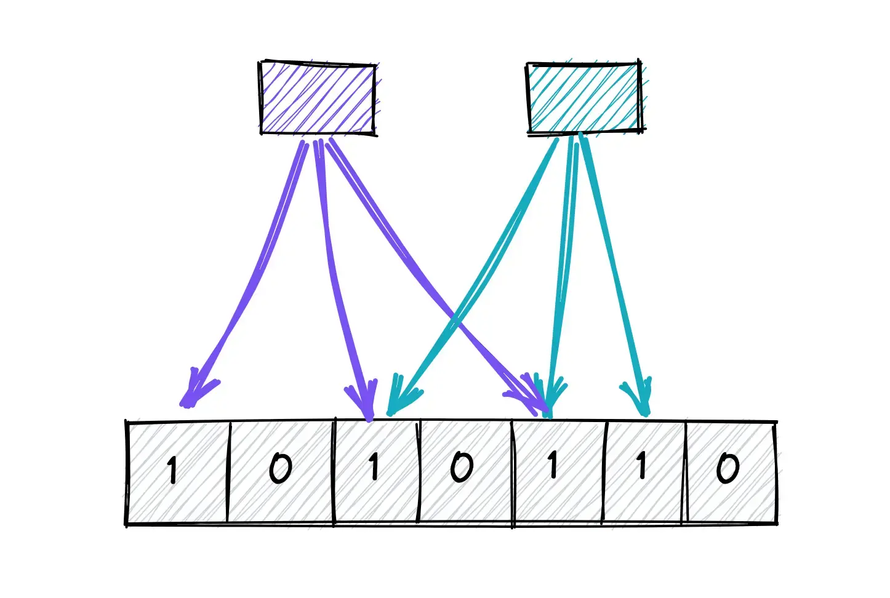
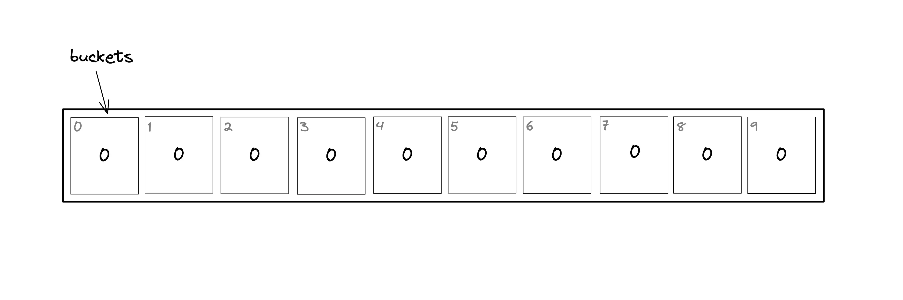
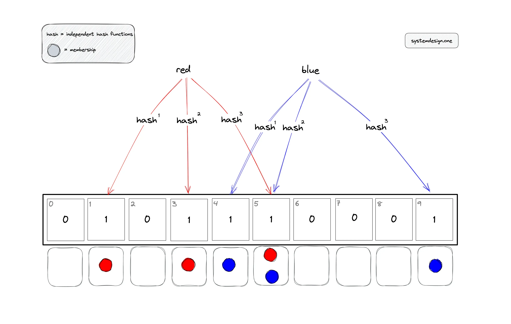
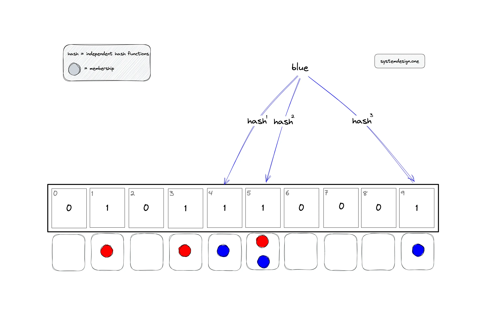
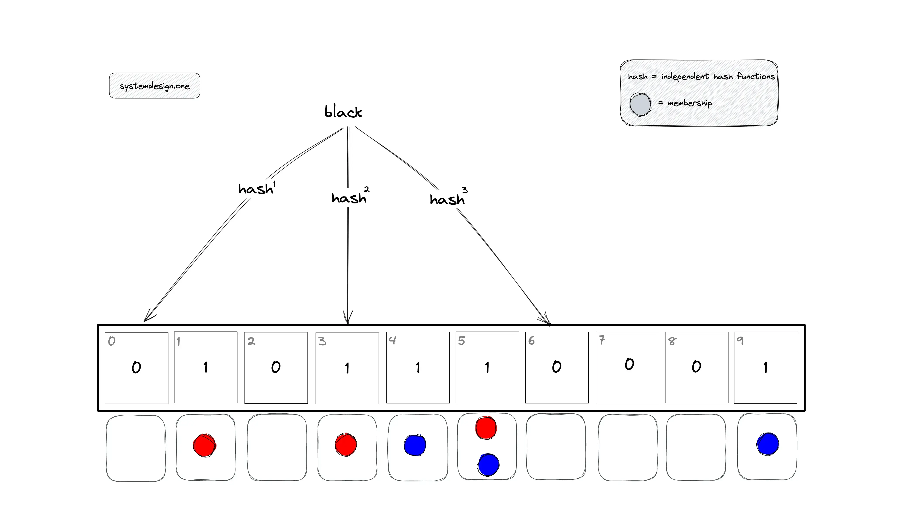
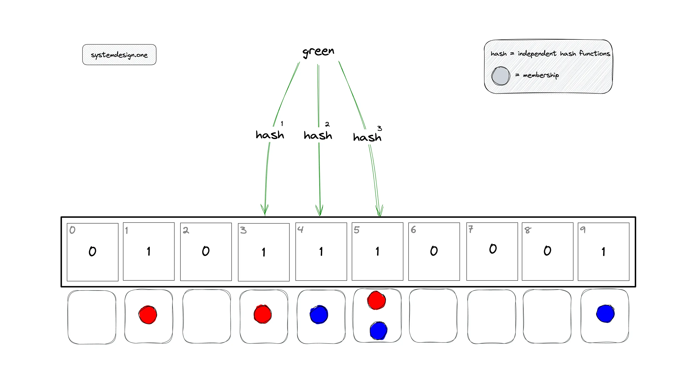
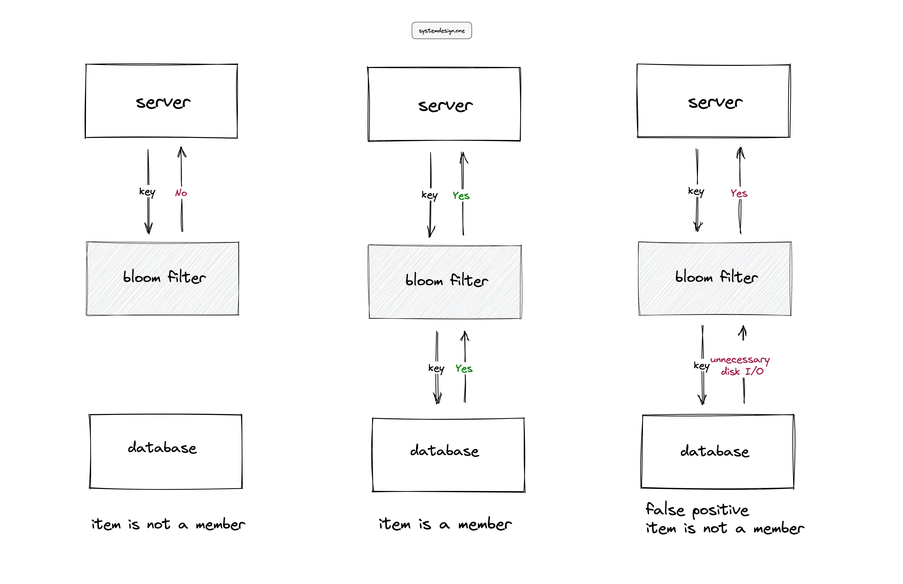
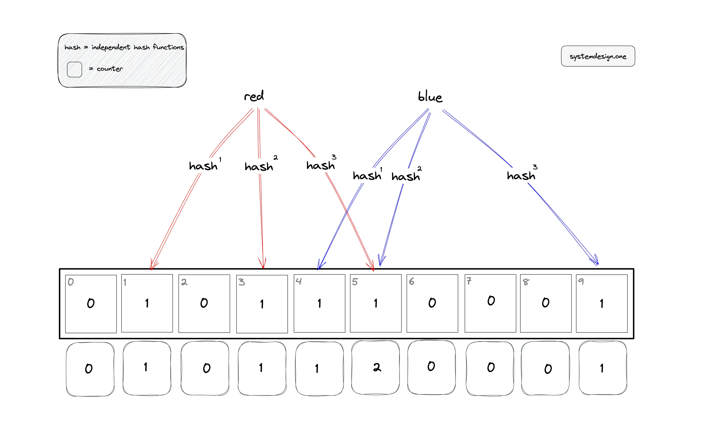
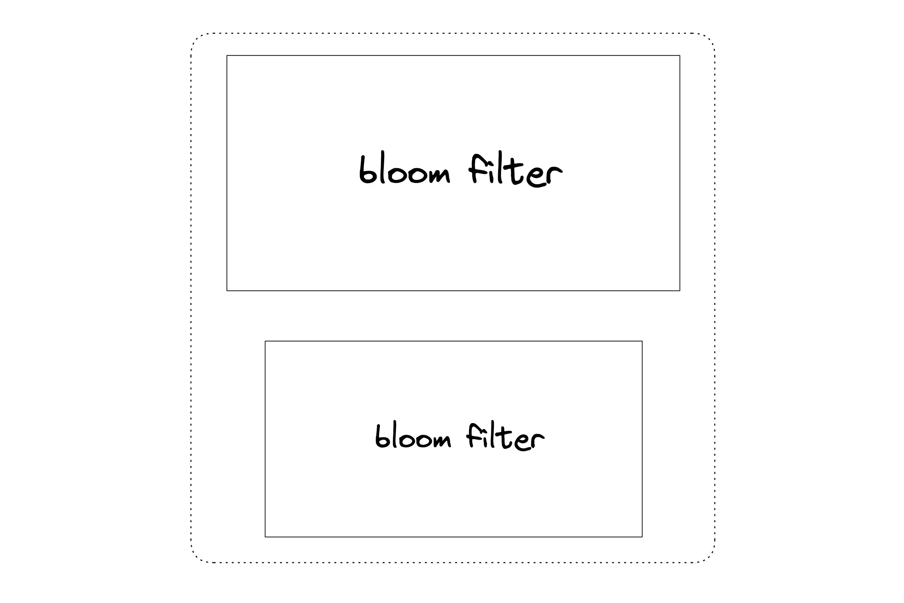

Bloom Filters Explained
Probabilistic Data Structure To Check Membership

The target audience for this article falls into the following roles:
- Tech workers
- Students
- Engineering managers
The prerequisite to reading this article is fundamental knowledge of data structures and algorithms. This article does not cover an in-depth guide on probabilistic data structures.
Download my system design playbook for free on newsletter signup:
Introduction
Data structures such as HashSet can be used in a small data set to test if an item is a member of the data set. However, the operation to test if an item is a member of a large dataset can be expensive. The time complexity and space complexity can be linear in the worst case.
Probabilistic data structures offer constant time complexity and constant space complexity at the expense of providing an answer that is non-deterministic.
Requirements
Design a data structure with the following characteristics:
- constant time complexity to test membership
- a small amount of memory to test membership
- insert and query operations should be parallelizable
- test membership can yield approximate results
What is a bloom filter?
A Bloom filter is a space-efficient probabilistic data structure that is used to test whether an item is a member of a set. The bloom filter will always say yes if an item is a set member. However, the bloom filter might still say yes although an item is not a member of the set (false positive). The items can be added to the bloom filter but the items cannot be removed. The bloom filter supports the following operations:
- adding an item to the set
- test the membership of an item in the set
How does a bloom filter work?
The bloom filter data structure is a bit array of length n as shown in Figure 1. The position of the buckets is indicated by the index (0–9) for a bit array of length ten. All the bits in the bloom filter are set to zero when the bloom filter is initialized (an empty bloom filter). The bloom filter discards the value of the items but stores only a set of bits identified by the execution of hash functions on the item.

How to add an item to the bloom filter?
The following operations are executed to add an item to the bloom filter:
- the item is hashed through k hash functions
- the modulo n (length of bit array) operation is executed on the output of the hash functions to identify the k array positions (buckets)
- the bits at all identified buckets are set to one
There is a probability that some bits on the array are set to one multiple times due to hash collisions.

In Figure 2, the items red and blue are added to the bloom filter. The buckets that should be set to one for the item red are identified by the execution of the modulo operator on the computed hash value.
- h1(red) mod 10 = 1
- h2(red) mod 10 = 3
- h3(red) mod 10 = 5
The buckets that should be set to one for the item blue are identified by the execution of the modulo operator on the computed hash value.
- h1(blue) mod 10 = 4
- h2(blue) mod 10 = 5
- h3(blue) mod 10 = 9
The bucket at position five is set to one by distinct items red and blue.
How to check the membership of an item in the bloom filter?
The following operations are executed to check if an item is a member of the bloom filter:
- the item is hashed through the same k-hash functions
- the modulo n (length of bit array) operation is executed on the output of the hash functions to identify the k array positions (buckets)
- verify if all the bits at identified buckets are set to one

If any of the identified bits are set to zero, the item is not a member of the bloom filter. If all the bits are set to one, the item might be a member of the bloom filter. The uncertainty about the membership of an item is due to the possibility of some bits being set to one by different items or due to hash function collisions.
In Figure 3, the bloom filter is queried to check the membership of item blue. The buckets that should be checked are identified by the execution of the modulo operator on the computed hash value.
- h1(blue) mod 10 = 4
- h2(blue) mod 10 = 5
- h3(blue) mod 10 = 9
The item blue might be a member of the bloom filter as all the bits are set to one.

In Figure 4, the bloom filter is queried to check the membership of item black, which is not a member of the bloom filter.
- h1(black) mod 10 = 0
- h2(black) mod 10 = 3
- h3(black) mod 10 = 6
The item black is not a member of the bloom filter as the bit at position zero is set to zero. The verification of the remaining bits can be skipped.
Bloom filter false positive

In Figure 5, the bloom filter is queried to check the membership of item green, which is not a member of the bloom filter.
- h1(green) mod 10 = 3
- h2(green) mod 10 = 4
- h3(green) mod 10 = 5
The bloom filter will say yes although the item green is not a member of the bloom filter as the bits were set to one by items blue and red.
Further system design learning resources
Download my system design playbook for free on newsletter signup:
What is the asymptotic complexity of the bloom filter?
The performance of the bloom filter depends on the hash functions used. The faster the computation of the hash function, the quicker the overall time of each operation on the bloom filter.
Time complexity
| Operation | Time complexity |
|---|---|
| add item | O(k) or constant |
| membership query | O(k) or constant |
where k is the number of hash functions.
The time complexity of the bloom filter is independent of the number of items already in the bloom filter. The k lookups in the bloom filter are independent and can be parallelized.
Space complexity
Regardless of the number of items in the bloom filter, the bloom filter requires a constant number of bits by reserving a few bits per item. The bloom filter does not store the data items yielding a constant space complexity of O(1).
Bloom filter calculator
The hur.st bloom filter calculator can be used to choose an optimal size for the bloom filter and explore how the different parameters interact. The accuracy of the bloom filter depends on the following:
- number of hash functions (k)
- quality of hash functions
- length of the bit array (n)
- number of items stored in the bloom filter
The properties of an optimal hash function for the bloom filter are the following:
- fast
- independent
- uniformly distributed
Advantages of bloom filter
The advantages of the bloom filter are the following:
- constant time complexity
- constant space complexity
- operations are parallelizable
- no false negatives
- enables privacy by not storing actual items
Bloom filter disadvantages
The limitations of the bloom filter are the following:
- bloom filter doesn’t support the delete operation
- false positives rate can’t be reduced to zero
- bloom filter on disk requires random access due to random indices generated by hash functions
Removing an item from the bloom filter is not supported because there is no possibility to identify the bits that should be cleared. There might be other items that map onto the same bits and clearing any of the bits would introduce the possibility of false negatives.
Bloom filter use cases

The bloom filters are useful in high-ingestion systems to prevent expensive disk seeks. In Figure 6, for instance, the server performing a lookup of an item in a large table on the disk can degrade the throughput of the service. The bloom filter in memory can be used to serve the lookups and reduce the unnecessary disk I/O except when the bloom filter returns a false positive. The applications of the bloom filter are the following:
- reducing disk lookups for the non-existing keys in a database
- determining whether a user ID is already taken
- filtering out previously shown posts on recommendation engines
- checking words for misspellings and profanity with a spellchecker
- identifying malicious URLs, blocked IPs, and fraudulent transactions
- Log-structured merge tree (LSM) storage engine used in databases such as Cassandra uses a bloom filter to check if the key exists in the SSTable
- MapReduce uses the bloom filter for the efficient processing of large datasets
Bloom filter implementation
RedisBloom module provides bloom filter support out of the box. The bloom filter can take as little as 2% of the memory a set requires and are typically faster than sets. The node.js implementation of a bloom filter for academic purposes can be found on github.com/guyroyse. Non-cryptographic hash functions such as MurmurHash or FNV-1a can be used in bloom filters.
Extensions of bloom filter
Counting bloom filter

The counting bloom filter includes an array of counters for each bit in the bloom filter array. The counter array is initialized to zeros. The counter for associated bits is incremented when an item is added to the counting bloom filter. The membership query is the same as the classical bloom filter. The counting bloom filter supports the delete operation. The following operations are executed to delete an item from the bloom filter:
- the item is hashed through the same k-hash functions
- the modulo n (length of bit array) operation is executed on the output of the hash functions to identify the k array positions (buckets)
- the counter of the associated bits is decreased
- the corresponding bit is unset to zero if the associated counter is decremented to zero
Naturally, Counting Bloom filters are much bigger than classical Bloom filters because additional memory has to be allocated for the counters even if most of them are zeros. Therefore, it is important to estimate how large such counters can become and how their size depends on the filter’s length m and the number of hash functions k.
Scalable bloom filter

The bloom filters cannot be rebalanced on saturation because it is not possible to identify the items that are members of the bloom filter. The bloom filters can be stacked for scalability. Once a bloom filter is saturated, a new bloom filter with a higher capacity is created on top of the current bloom filter. Membership queries require inspecting each bloom filter in the stack. The addition of a new item must check each bloom filter before adding the item to the top bloom filter.
Striped bloom filter
The striped bloom filter is implemented using an array of unsigned 64-bit integers and is divided into shards for concurrency. Each shard contains its mutex, allowing for a high degree of concurrent insert and lookup throughput. A restriction is that the bloom filter size must be a multiple of the number of shards.
Variants of bloom filter
There are data structures that offer similar functionality as the bloom filter. The popular variants of the bloom filter are the following:
Summary
The bloom filters are a useful data structure in high-ingestion systems. The bloom filter offers constant time complexity and constant space complexity. The tradeoff is the bloom filter yielding a probabilistic result.
What to learn next?
Download my system design playbook for free on newsletter signup:
License
CC BY-NC-ND 4.0: This license allows reusers to copy and distribute the content in this article in any medium or format in unadapted form only, for noncommercial purposes, and only so long as attribution is given to the creator. The original article must be backlinked.
References
- RedisBloom, redis.io
- Deduplication with redis, redis.com
- Rob Edwards, Bloom Filters (2018), youtube.com
- Suresh Kondamudi, How To Remove Duplicates In A Large Dataset Reducing Memory Requirements By 99% (2016), highscalability.com
- Bloom Filter Datatype for Redis (2022), redis.com
- Burton H. Bloom, Space/Time Trade-offs in Hash Coding with Allowable Errors (1970), uta.edu
- Paulo Almeida et al., Scalable Bloom Filters (2007)
- Andrei Broder, Michael Mitzenmacher, Network Applications of Bloom Filters: A Survey (2004), harvard.edu
- Alfredo Luque, Hyperbloom (2014), GitHub.com
- Bonomi, F., et al., An Improved Construction for Counting Bloom Filters (2006), harvard.edu
- Tarkoma, S., et al., Theory and Practice of Bloom Filters for Distributed Systems (2012), ieee.org
- Guy Royse, How to Use Bloom Filters in Redis (2020), youtube.com
- Akash Jain, Probabilistic Data Structures for Big Data and Streaming Applications (2021), octo.vmware.com
- Assoc. Prof. Milko Marinov, A Bloom Filter Application for Processing Big Datasets through MapReduce Framework (2021), infotech-bg.com